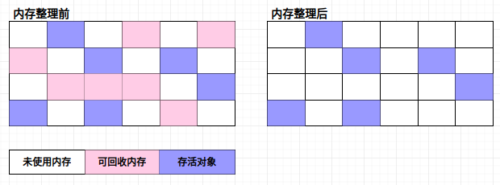
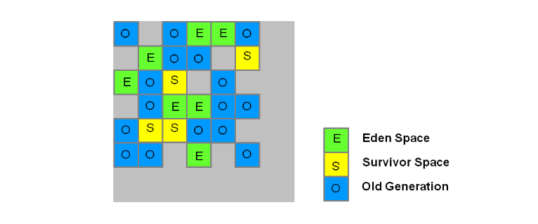
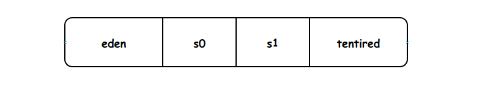

1 对象、引用以及垃圾回收算法
1.1 对象存活的判定方法
1.1.1 引用计数法
- 算法思想：给对象中添加一个引用计数器，每当有一个地方引用它时，计数器值就加1。当引用失效时，计数器值就减1。任何时刻计数器为0的对象就是不可能再被使用的。
- 优点：快、方便、实现简单。
- 缺点：对象相互引用时，很难判断对象是否该回收。
1.1.2 可达性分析
- 算法思想：通过一系列的称为“GC Roots”的对象作为起始点，从这些节点开始向下搜索，搜索所走过的路径称为引用链(Reference Chain)，当一个对象到GC Roots没有任何引用链相连时，则证明此对象是不可用的。
- GC Roots的对象包括下面几种
- 虚拟机栈（栈帧中的本地变量表）中引用的对象
- 方法区中类静态属性引用的对象
- 方法区中常量应用对象
- 本地方法栈中JNI(即一般说的Native方法)引用的对象
1.2 引用类型
强引用
一般的Object obj = new Object()，就属于强引用。当内存空间不足，Java虚拟机宁愿抛出OutOfMemoryError错误，使程序异常终止，也不会靠随意回收具有强引用的对象来解决内存不足问题。软引用(SoftReference)
一些有用但是并非必需，用软引用关联的对象，系统将在要发生OOM之前，这些对象就会被收回。软引用可用来实现内存敏感的高速缓存。
软引用可以和一个引用队列(ReferenceQueue)联合使用，如果软引用所引用的对象被垃圾回收，JAVA虚拟机就会把这个软引用加入到与之关联的引用队列中。public static void main(String[] args) { User u = new User(1, "user1"); SoftReference<User> userSoft = new SoftReference<>(u); u = null; //保证new User(1, "user1")这个实例只有userSoft在软引用 System.out.println(userSoft.get()); System.gc(); //展示gc的时候，SoftReference不一定会被回收 System.out.println("AfterGC"); System.out.println(userSoft.get()); //new User(1, "user1")没有被回收 List<byte[]> list = new LinkedList<>(); try { for (int i = 0; i < 100; i++) { //User(1, "user1")实例一直存在 System.out.println(userSoft.get()); list.add(new byte[1024 * 1024]); } } catch (Throwable e) { //抛出OOM异常后打印的，User(1, "Mark")这个实例被回收 System.out.println("Throwable: " + userSoft.get()); } }弱引用(WeakReference)
一些有用（程度比软引用更低）但是并非必需，用弱引用关联的对象，只能生存到下一次垃圾回收之前，GC发生时，不管内存够不够，都会被回收。
弱引用可以和一个引用队列(ReferenceQueue)联合使用，如果弱引用所引用的对象被垃圾回收，Java虚拟机就会把这个弱引用加入到与之关联的引用队列中。public static void main(String[] args) { User u = new User(1, "user1"); WeakReference<User> userWeak = new WeakReference<>(u); u = null; System.out.println(userWeak.get()); System.gc(); System.out.println("AfterGc"); System.out.println(userWeak.get()); }虚引用(PhantomReference)
“虚引用”顾名思义,就是形同虚设,与其他几种引用都不同,虚引用并不会决定对象的生命周期。如果一个对象仅持有虚引用,那么它就和没有任何引用一样,在任何时候都可能被垃圾回收。
虚引用主要用来跟踪对象被垃圾回收的活动。
虚引用与软引用和弱引用的一个区别在于: 虚引用必须和引用队列(ReferenceQueue)联合使用。当垃圾回收器准备回收一个对象时,如果发现它还有虚引用，就会在回收对象的内存之前，把这个虚引用加入到与之关联的引用队列中。程序可以通过判断引用队列中是否已经加入了虚引用，来了解被引用的对象是否将要被垃圾回收。程序如果发现某个虚引用已经被加入到引用队列,那么就可以在所引用的对象的内存被回收之前采取必要的行动。特别注意，在程序设计中一般很少使用弱引用与虚引用，使用软引用的情况较多，这是因为软引用可以加速JVM对垃圾内存的回收速度，可以维护系统的运行安全，防止内存溢出(OutOfMemory)等问题的产生。
特别注意，在程序设计中一般很少使用弱引用与虚引用，使用软引用的情况较多，这是因为软引用可以加速JVM对垃圾内存的回收速度，可以维护系统的运行安全，防止内存溢出(OutOfMemory)等问题的产生。幽灵引用
最弱，被垃圾回收的时候收到一个通知
Tips：
软引用 SoftReference和弱引用 WeakReference，可以用在内存资源紧张的情况下以及创建不是很重要的数据缓存。当系统内存不足的时候，缓存中的内容是可以被释放。
例如，一个程序用来处理用户提供的图片。如果将所有图片读入内存，这样虽然可以很快的打开图片，但内存空间使用巨大，一些使用较少的图片浪费内存空间，需要手动从内存中移除。如果每次打开图片都从磁盘文件中读取到内存再显示出来，虽然内存占用较少，但一些经常使用的图片每次打开都要访问磁盘，代价巨大。这个时候就可以用软引用构建缓存。
1.3 垃圾收集算法
1.3.1 标记-清除算法（Mark-Sweep）
- 算法思想：算法分为“标记”和“清除”阶段，首先标记出所有需要回收的对象，在标记完成后统一回收所有被标记的对象。
- 缺点：标记清除之后会产生大量不连续的内存碎片，空间碎片太多可能会导致以后在程序运行过程中需要分配较大的对象时，无法找到足够的连续内存而不得不提前触发另一次垃圾收集动作。

1.3.2 复制算法（Copying）
- 算法思想：将可用内存按容量划分为大小相等的两块，每次只使用其中的一块。当这一块的内存用完了，就将还存活着的对象复制到另外一块上面，然后再把已使用过的内存空间一次清理掉。这样使得每次都是对整个半区进行内存回收，内存分配时也就不用考虑内存碎片等复杂情况，只要按顺序分配内存即可，实现简单，运行高效。
- 缺点：这种算法的代价是将内存缩小为了原来的一半。
1.3.3 标记-整理算法（Mark-Compact）
- 算法思想：根据老年代的特点特出的一种标记算法，首先标记出所有需要回收的对象，在标记完成后，后续步骤不是直接对可回收对象进行清理，而是让所有存活的对象都向一端移动，然后直接清理掉端边界以外的内存。
1.3.4 分代收集算法
- 算法思想：根据对象存活周期的不同将内存划分为几块。一般是把Java堆分为新生代和老年代，这样就可以根据各个年代的特点采用最适当的收集算法。
专门研究表明，新生代中的对象98%是“朝生夕死”的，所以并不需要按照1:1的比例来划分内存空间，而是将内存分为一块较大的Eden空间和两块较小的Survivor空间，每次使用Eden和其中一块Survivor[1]。当回收时，将Eden和Survivor中还存活着的对象一次性地复制到另外一块Survivor空间上，最后清理掉Eden和刚才用过的Survivor空间。HotSpot虚拟机默认Eden和Survivor的大小比例是8:1，也就是每次新生代中可用内存空间为整个新生代容量的90%（80%+10%），只有10%的内存会被“浪费”。当然，98%的对象可回收只是一般场景下的数据，我们没有办法保证每次回收都只有不多于10%的对象存活，当Survivor空间不够用时，需要依赖其他内存（这里指老年代）进行分配担保（Handle Promotion）。
在新生代中，每次垃圾收集时都发现有大批对象死去，只有少量存活，那就选用复制算法，只需要付出少量存活对象的复制成本就可以完成收集。而老年代中因为对象存活率高、没有额外空间对它进行分配担保，就必须使用“标记—清理”或者“标记—整理”算法来进行回收。
2 垃圾回收器
垃圾回收器列表
| 收集器 | 收集对象和算法 | 收集器类型 | 说明 | 适用场景 |
|---|---|---|---|---|
| Serial | 新生代，复制算法 | 单线程 | 进行垃圾收集时，必须暂停所有工作线程，直到完成；(stop the world) | 简单高效；适合内存不大的情况； |
| ParNew | 新生代，复制算法 | 并行的多线程收集器 | ParNew垃圾收集器是Serial收集器的多线程版本 | 搭配CMS垃圾回收器的首选 |
| Parallel Scavenge | 新生代，复制算法 | 并行的多线程收集器 | 类似ParNew,更加关注吞吐量，达到一个可控制的吞吐量； | 本身是Server级别多CPU机器上的默认GC方式，主要适合后台运算不需要太多交互的任务； |
| Serial Old | 老年代，标记整理算法 | 单线程 | jdk7/8默认的老生代垃圾回收器 | Client模式下虚拟机使用 |
| Parallel Old | 老年代，标记整理算法 | 并行的多线程收集器 | Parallel Scavenge收集 器的老年代版本，为了配合Parallel Scavenge的面向吞吐量的特性而开发的对应组合； | 在注重吞吐量以及CPU资源敏感的场合采用 |
| CMS | 老年代，标记清除算法 | 并行与并发收集器 | 尽可能的缩短垃圾收集时 用户线程停止时间；缺点在于： 1.内存碎片。 2.需要更多cpu资源。 3.浮动垃圾问题，需要更大的堆空间。 | 重视服务的响应速度、系统停顿时间和用户体验的互联网网站或者B/S系统。互联网后端目前cms是主流的垃圾回收器; |
| G1 | 跨新生代和老年代；标记整理+化整为零 | 并行与并发收集器 | JDK1.7才正式引入，采用分区回收的思维，基本不牺牲吞吐量的前提下完成低停顿的内存回收；可预测的停顿是其最大的优势； | 面向服务端应用的垃圾回收器，目标为取代CMS |
2.1 Serial收集器
Serial(串行)收集器收集器是最基本，历史最悠久的垃圾收集器了。大家看名字就知道这个收集器是一个单线程收集器了。它的 “单线程” 的意义不仅仅意味着它只会使用一条垃圾收集线程去完成垃圾收集工作，更重要的是它在进行垃圾收集工作的时候必须暂停其他所有的工作线程( “Stop The World”)，直到它收集结束。
收集对象和算法：新生代，采用复制算法。
优点：它简单而高效（与其他收集器的单线程相比）。Serial收集器由于没有线程交互的开销，自然可以获得很高的单线程收集效率。Serial收集器对于运行在Client模式下的虚拟机来说是个不错的选择。
配置参数：-XX:+UseSerialGC 新生代和老年代都用串行收集器。
2.2 ParNew收集器
ParNew收集器其实就是Serial收集器的多线程版本，除了使用多线程进行垃圾收集外，其余行为（控制参数、收集算法、回收策略等等）和Serial收集器完全一样。它是许多运行在Server模式下的虚拟机的首要选择，除了Serial收集器外，只有它能与CMS收集器配合工作。
收集对象和算法：新生代，复制算法。
优点：多线程，多CPU的，停顿时间比Serial少。
参数：-XX:+UseParNewGC 新生代使用ParNew收集器，老年代使用Serial Old收集器。
并行和并发概念补充
- 并行（Parallel）：指多条垃圾收集线程并行工作,但此时用户线程仍然处于等待状态。
- 并发（Concurrent）：指用户线程与垃圾收集线程同时执行（但不一定是并行,可能会交替执行），用户程序在继续运行，而垃圾收集器运行在另一个CPU上。
2.3 Parallel Scavenge（ParallerGC）收集器
Parallel Scavenge收集器类似于 ParNew 收集器。Parallel Scavenge收集器关注点是吞吐量(高效率的利用CPU)，尽快完成程序的运算任务，主要适合在后台运算而不需要太多交互的任务。CMS等垃圾收集器的关注点更多的是用户线程的停顿时间(提高用户体验)。所谓吞吐量就是CPU中用于运行用户代码的时间与CPU总消耗时间的比值。Parallel Scavenge收集器提供了很多参数供用户找到最合适的停顿时间或最大吞吐量。
收集对象和算法：新生代，采用复制算法。
相关参数：
| 参数 | 描述 |
|---|---|
| -XX:+UseParallelOldGC | 新生代使用ParallerGC,老年代使用Parallel Old |
| -XX:MaxGCPauseMills | 参数允许的值是一个大于0的毫秒数，收集器将尽可能地保证内存回收花费地时间不超过设定值。不过大家不要认为如果把这个参数的值设置得稍小一点就能使得系统的垃圾收集速度变得更快，GC停顿时间缩短是以牺牲吞吐量和新生代空间来换取的：系统把新生代调小一些，收集300M新生代肯定比收集500M快吧，这也直接导致垃圾收集发生得更加频繁一些，原来10秒收集一次，每次停顿100毫秒，现在变成5秒收集一次，每次停顿70毫秒。停顿时间的确在下降，但吞吐量也降下来了。 |
| -XX:GCTimeRatio | 参数的值应当是一个大于0且小于100的整数，也就是垃圾收集时间占总时间的5%(即1/(1+19))，默认值为99，就是允许最大1%(即1/(1+99))的垃圾收集时间。 |
| -XX:+UseAdaptiveSizePolicy | 当这个参数打开之后，就不需要手工指定新生代的大小(-Xmn)，Eden与Survivor区的比例(-XX:SurvivorRatio)、晋升老年代对象年龄(-XX:PretenureSizeThreshold)等细节参数了，虚拟机会根据当前系统的运行情况收集性能监控信息，动态的调用这些参数以提供这些参数合适的停顿时间或者最大的吞吐量，这种调节方式称为GC自适应的调节策略。 |
如果对于收集器运作原来不太了解，手工优化存在困难的时候，使用Parallel Scavenge收集器配合自适应调节策略，把内存管理的调优任务交给虚拟机去完成将是一个不错的选择。只需要把基本的内存数据设置好（如-Xmx设置最大堆），然后使用MaxGCPauseMillis参数（更关注最大停顿时间）或GCTimeRatio（更关注吞吐量）参数给虚拟机设立一个优化目标，那具体细节参数的调节工作就由虚拟机完成了。自适应调节策略也是Parallel Scavenge收集器与ParNew收集器的一个重要区别。
2.4 Serial Old收集器
Serial收集器的老年代版本，它同样是一个单线程收集器。它主要有两大用途：一种用途是在JDK1.5以及以前的版本中与Parallel Scavenge收集器搭配使用，另一种用途是作为CMS收集器的后备方案。
收集对象和算法：老年代，标记-整理算法。
相关参数：
| 参数 | 描述 |
|---|---|
| -XX:+UseSerialGC | 新生代和老年代都用串行收集器。 |
| -XX:+UseParNewGC | 新生代使用ParNew收集器，老年代使用Serial Old收集器。 |
| -XX:+UseParallelGC | 新生代使用ParallerGC收集器，老年代使用Serial Old收集器。 |
2.5 Parallel Old收集器
Parallel Scavenge收集器的老年代版本。使用多线程和“标记-整理”算法。在注重吞吐量以及CPU资源的场合，都可以优先考虑Parallel Scavenge收集器和Parallel Old收集器。
收集对象和算法：老年代，标记-整理算法。
参数: XX:+UseParallelOldGC: 新生代使用ParallerGC收集器，老年代使用Parallel Old收集器。
2.6 CMS收集器
CMS(Concurrent Mark Sweep)收集器是一种以获取最短回收停顿时间为目标的收集器。它而非常符合在注重用户体验的应用上使用。CMS收集器是HotSpot虚拟机第一款真正意义上的并发收集器，它第一次实
现了让垃圾收集线程与用户线程(基本上)同时工作。从名字中的Mark Sweep这两个词可以看出，CMS收集器是一种 “标记-清除”算法实现的，它的运作过程相比于前面几种垃圾收集器来说更加复杂一些。
整个过程分为四个步骤:
- 初始标记：暂停所有的其他线程,并记录下直接与GC Roots相连的对象，速度很快;
- 并发标记：和用户的应用程序同时进行，进行GC RootsTracing的过程，用一个闭包结构去记录可达对象。但在这个阶段结束，这个闭包结构并不能保证包含当前所有的可达对象。因为用户线程可能会不断的更新引用域，所以GC线程无法保证可达性分析的实时性。所以这个算法里会跟踪记录这些发生引用更新的地方。
- 重新标记：重新标记阶段就是为了修正并发标记期间因为用户程序继续运行而导致标记产生变动的那一部分对象的标记记录，这个阶段的停顿时间一般会比初始标记阶段的时间稍⻓，远远比并发标记阶段时间短。
- 并发清除：开启用户线程，同时GC线程开始对为标记的区域做清扫。
收集对象和算法：老年代，采用标记-清除算法。
相关参数：
| 参数 | 描述 |
|---|---|
| -XX:CMSInitialOccupyFraction | CMS收集器不能像其他收集器那样等到老年代几乎完全被填满了再进行收集，需要预留一部分空间提供并发收集时的程序运作使用。 |
| -XX:+UseCMSCompactAtFullCollection | CMS收集器提供了一个这个开关参数（默认就是开启的），用于在CMS收集器顶不住要进行FullGC时开启内存碎片的合并整理过程，内存整理的过程是无法并发的，空间碎片问题没有了，但停顿时间不得不变长。 |
| -XX:CMSFullGCsBeforeCompaction | 这个参数是用于设置执行多少次不压缩的Full GC后，跟着来一次带压缩的（默认值为0，表示每次进入FullGC时都进行碎片整理 |
优点：并发收集、低停顿
缺点：对CPU资源敏感，无法处理浮动垃圾，它使用的回收算法-“标记-清除”算法会导致收集结束时会有大量空间碎片产生。
浮动垃圾：由于CMS并发清理阶段用户线程还在运行着，伴随程序运行自然就会有新的垃圾不断产生，这一部分垃圾出现在标记过程之后，CMS无法在当次收集中处理掉它们，只好留待下一次GC时再清理掉。
2.7 G1收集器
G1(Garbage-First)是一款面向服务器的垃圾收集器，主要针对配备多颗处理器及大容量内存的机器。以极高概率满足GC停顿时间要求的同时，还具备高吞吐量性能特征。
G1收集器对堆的内存布局：
被视为JDK1.7中HotSpot虚拟机的一个重要进化特征。它具备一下特点:
- 并行与并发：G1能充分利用多CPU、多核环境下的硬件优势，使用多个CPU（CPU或者CPU核心）来缩短Stop-The-World停顿的时间，部分其他收集器原本需要停顿Java线程执行的GC动作，G1收集器仍然可以通过并发的方式让Java程序继续执行。
- 分代收集：与其他收集器一样，分代概念在G1中依然得以保留。虽然G1可以不需要其他收集器配合就能独立管理整个GC堆，但它能够采用不同的方式去处理新创建的对象和已经存活了一段时间、熬过多次GC的旧对象以获取更好的收集效果。
- 空间整合：与CMS的“标记—清理”算法不同，G1从整体来看是基于“标记—整理”算法实现的收集器，从局部（两个Region之间）上来看是基于“复制”算法实现的，但无论如何，这两种算法都意味着G1运作期间不会产生内存空间碎片，收集后能提供规整的可用内存。这种特性有利于程序长时间运行，分配大对象时不会因为无法找到连续内存空间而提前触发下一次GC。
- 内存布局：在G1之前的其他收集器进行收集的范围都是整个新生代或者老年代，而G1不再是这样。使用G1收集器时，Java堆的内存布局就与其他收集器有很大差别，它将整个Java堆划分为多个大小相等的独立区域（Region），虽然还保留有新生代和老年代的概念，但新生代和老年代不再是物理隔离的了，它们都是一部分Region（不需要连续）的集合。
新生代GC过程：回收Eden区和survivor区，回收后，所有eden区被清空，存在一个survivor区保存了部分数据。老年代区域会增多，因为部分新生代的对象会晋升到老年代。
并发标记周期：
- 初始标记：短暂，仅仅只是标记一下GC Roots能直接关联到的对象，速度很快，产生一个全局停顿，都伴随有一次新生代的GC。
- 根区域扫描：扫描survivor区可以直接到达的老年代区域。
- 并发标记阶段：扫描和查找整个堆的存活对象，并标记。
- 重新标记：会产生全局停顿，对并发标记阶段的结果进行修正。
- 独占清理：会产生全局停顿，对GC回收比例进行排序，供混合收集阶段使用。
- 并发清理：识别并清理完全空闲的区域，并发进行。
混合收集：对含有垃圾比例较高的Region进行回收。
| 参数 | 描述 |
|---|---|
| -XX:+UseG1GC | 开启使用G1收集器 |
| -XX:MaxGCPauseMillis | 指定目标的最大停顿时间，G1尝试调整新生代和老年代的比例，堆大小，晋升年龄来达到这个目标时间。 |
| -XX:ParallerGCThreads | 设置GC的工作线程数量 |
3 内存分配策略
堆空间的基本结构：

上图所示的 eden区、s0区、s1区都属于新生代，tentired区属于老年代。大部分情况，对象都会首先在Eden区域分配，在一次新生代垃圾回收后，如果对象还存活，则会进入s0或者s1，并且对象的年龄还会加1，当它的年龄增加到一定程度(默认为15岁)，就会被晋升到老年代中。对象晋升到老年代的年龄阈值，可以通过参数 -XX:MaxTenuringThreshold 来设置。
内存分配策略
- 对象优先在Eden分配
如果说Eden内存空间不足，就会发生Minor GC。 - 大对象直接进入老年代
大对象：需要大量连续的内存空间的Java对象，比如很长的字符串和大型数组。- 导致内存有空间，还是需要提前进行垃圾回收获取连续空间来放他们。
- 会进行大量的内存复制。
- -XX:PretenureSizeThreshold 参数，大于这个数量直接在老年代分配，缺省为0，表示绝不会直接分配在老年代。
- 长期存活的对象将进入老年代
默认15岁，-XX:MaxTenuringThreshold调整。
动态对象年龄判定：为了能更好地适应不同程序的内存状况，虚拟机并永远地要求对象地年龄必须达到了MaxTenuringThreshold才能晋升老年代，但如果在Survivor空间相同年龄所有对象大小的总和大于Survivor空间的一半，年龄大于或等于该年龄的对象就可以直接进入老年代，无须等到MaxTenuringThreshold中要求的年龄。
空间分配担保：新生代中有大量的对象存活，survivor空间不够，当出现大量对象在MinorGC后仍然存活的情况(最极端的情况就是内存回收后新生代中所有对象都存活)，就需要老年代进行分配担保，把Survivor无法容纳的对象直接进入老年代。只要老年代的连续空间大于新生代对象的总大小或者历次晋升的平均大小，就进行Minor GC，否则进行Full GC。
Tips!
大多数情况下，对象在新生代中eden区分配。当eden区没有足够空间进行分配时，虚拟机将发起一次Minor GC。
新生代GC(Minor GC)：指发生新生代的的垃圾收集动作,Minor GC非常频繁,回收速度一般也比较快。
老年代GC(Major GC/Full GC)：指发生在老年代的GC，出现了Major GC经常会伴随至少一次的Minor GC(并非绝对)，Major GC的速度一般会比Minor GC的慢10倍以上。